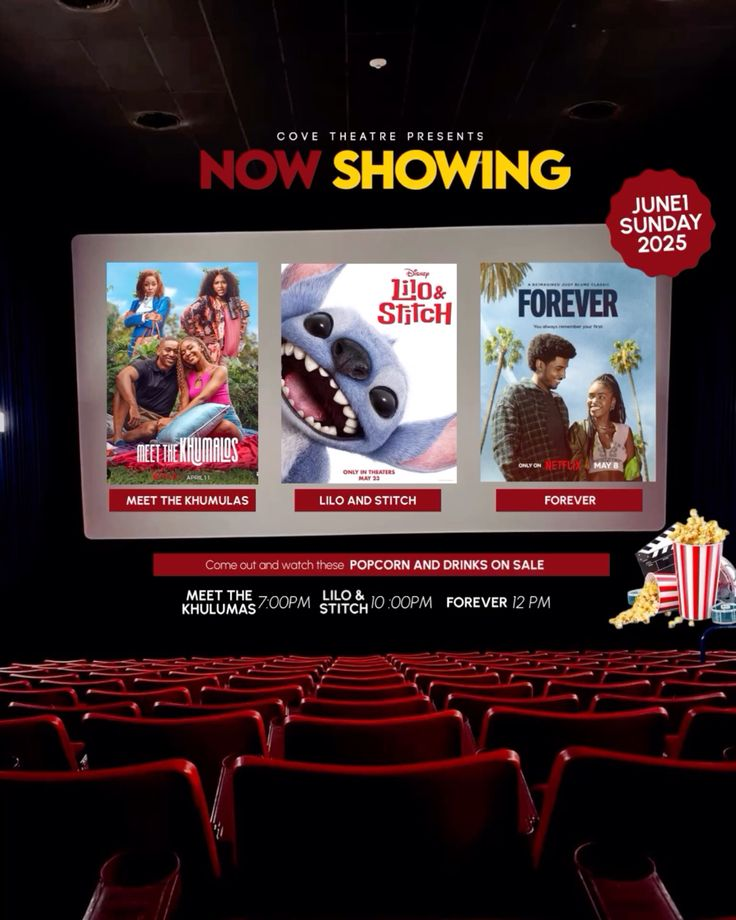
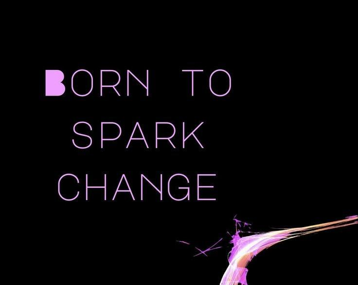
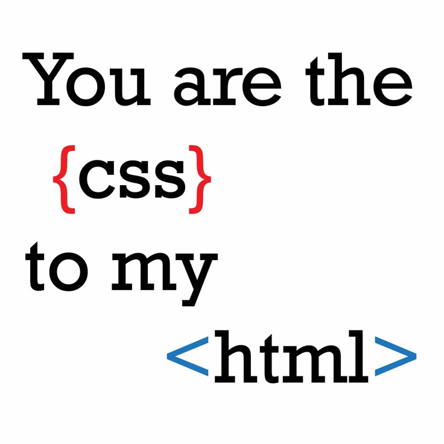

Explore My Portfolio
Explore my educational background, technical skills, experiences, and projects that reflect my passion for Information Management, web development, creativity, and continuous learning.
Welcome to my portfolio.
Step into my world of creativity and innovation. Explore my skills, educational background, experiences, and projects that showcase my passion for web development and creativity.
I am currently pursuing a Diploma in Information Management at Universiti Teknologi MARA (UiTM). I have a strong passion for web development, graphic design, and digital content creation. I enjoy transforming creative ideas into user-friendly digital experiences while continuously enhancing my technical and creative skills through academic projects and practical experience.
Explore my educational background, technical skills, experiences, and projects that reflect my passion for Information Management, web development, creativity, and continuous learning.
Throughout my academic journey, I have developed a diverse range of technical and professional skills. These competencies have enabled me to complete various academic projects while continuously enhancing my creativity, problem-solving abilities, and technical knowledge.
Develop responsive and user-friendly websites using HTML, CSS, and basic JavaScript while applying modern web design principles and best practices.
Apply records management principles to organise, preserve, retrieve, and maintain information efficiently throughout its lifecycle.
Design relational databases, create SQL queries, and manage structured data using MySQL to support information systems and academic projects.
Design creative posters, banners, presentations, and social media content using Canva while maintaining attractive visual communication and branding.
The following projects demonstrate my technical knowledge, creativity, and practical experience gained throughout my academic journey. Each project has strengthened my skills in web development, information management, database systems, graphic design, and digital content creation.

Developed a responsive online movie ticket booking system using HTML, CSS, PHP, and MySQL. The system includes user registration, secure login, movie listings, seat selection, booking confirmation, and database integration to provide a seamless online booking experience.
View Dream Cinema Project
Designed promotional materials including banners, posters, presentation slides, and social media content using Canva. The designs focused on creating engaging, educational, and visually appealing communication materials for school programmes.
View Spark Programme
Designed and developed a fully responsive personal portfolio website using HTML5 and CSS3 to showcase my educational background, technical skills, projects, achievements, and experiences with a clean and user-friendly interface.
View Portfolio Website